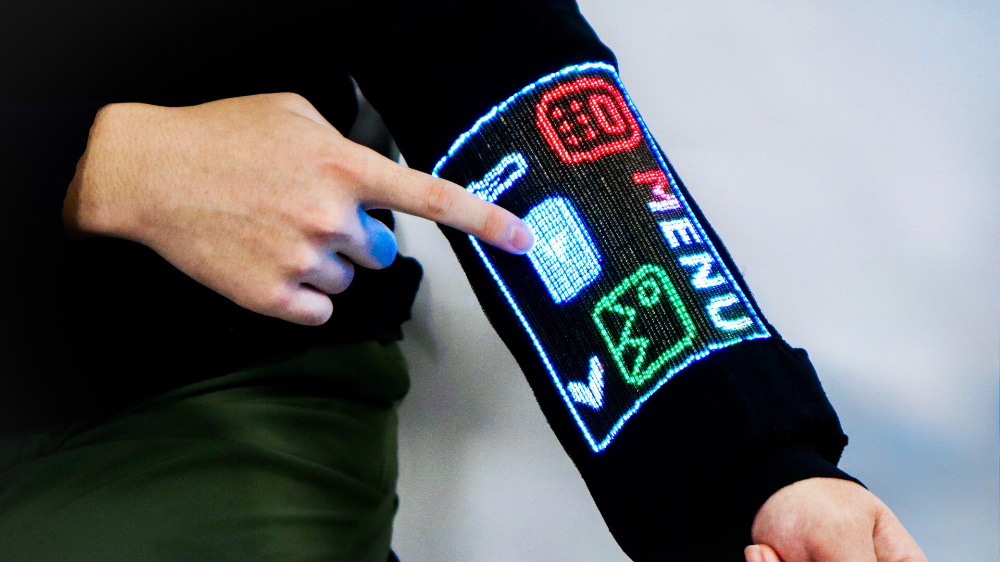

Teclado y ratón
La interacción se realiza mediante periféricos separados de la pantalla. Es eficaz para tareas de precisión, pero requiere un puesto de trabajo o una superficie.
HARDWARE EMERGENTE · OCTUBRE 2026
Una manga que muestra imágenes, reconoce toques y permite interactuar con información digital. No es ciencia ficción: es un prototipo desarrollado en la Universidad Nacional de Singapur.
Investigación publicada en Nature el 21 de octubre de 2026.

01 / EL DISPOSITIVO
El Touch-sensing Digital Pixel Fibre es una tecnología experimental de fibras electrónicas que integran pequeños elementos luminosos y detección táctil. Al tejerlas en la manga de una prenda, los investigadores construyeron una interfaz gráfica de usuario (GUI) que responde a las pulsaciones.
El prototipo puede mostrar fotografías y vídeos, utilizar una calculadora, funcionar como brújula y recibir imágenes mediante Bluetooth. También incorpora otras formas de entrada y salida, como sensores y funciones controladas por voz.
La diferencia frente a colocar una pantalla convencional sobre una chaqueta es que la propia estructura textil forma parte de la interfaz.
Ver fotografías y explicación oficial de la NUS ↗02 / EVOLUCIÓN
No sustituye todavía al móvil ni al ordenador. Representa una posible nueva etapa en la evolución de las interfaces.
La interacción se realiza mediante periféricos separados de la pantalla. Es eficaz para tareas de precisión, pero requiere un puesto de trabajo o una superficie.
Los teléfonos y tabletas acercan la entrada a la información visual: tocamos directamente los elementos que queremos utilizar.
La informática se lleva en el cuerpo. Muchas soluciones anteriores dependen de pantallas rígidas o de sensores sin una interfaz gráfica textil integrada.
La pantalla y la detección táctil se incorporan en fibras de la propia prenda. La manga puede convertirse en un espacio de interacción.
03 / INTERACCIÓN PERSONA-ORDENADOR
Esta innovación no solo cambia el material de la pantalla: obliga a pensar cómo diseñar interfaces útiles, comprensibles y cómodas.
El usuario puede tocar información representada en la propia prenda. Se reduce la separación física entre la acción y su resultado visual.
Según las heurísticas de Nielsen, el sistema debe comunicar qué ocurre. Una pantalla en la manga puede ofrecer respuesta visual inmediata al tocarla.
Iconos y opciones visibles podrían disminuir la necesidad de memorizar comandos, siempre que la interfaz sea legible y esté bien organizada.
Combina entradas y salidas táctiles, visuales y, en el prototipo, funciones de voz y sonido. Esto abre distintas maneras de realizar tareas.
La flexibilidad de la prenda puede favorecer la comodidad, pero hay que estudiar la postura, la fatiga, la precisión de los toques y el contexto de uso.
Podría ofrecer alternativas a ciertas interacciones convencionales. No obstante, su accesibilidad real debe evaluarse con usuarios y necesidades diversas.
04 / EVALUACIÓN CRÍTICA
Desde IPO, una interfaz debe evaluarse por su eficacia, eficiencia y satisfacción en un contexto de uso, no solo por lo novedoso de su tecnología.
Estas son preguntas de evaluación propuestas para el trabajo, no problemas demostrados del prototipo.
05 / GALERÍA DOCUMENTAL
Las imágenes oficiales de la manga, sus fibras y las demostraciones se encuentran en los enlaces siguientes. Se enlazan las fotografías originales para evitar presentar una imagen ilustrativa como si fuera el dispositivo real.
06 / FUENTES
El dispositivo fue descrito por la Universidad Nacional de Singapur y publicado en la revista científica Nature el 21 de octubre de 2026. Es un prototipo de investigación, no un producto a la venta. Aunque existían textiles electrónicos, la novedad descrita por sus autores es integrar una interfaz gráfica táctil directamente en las fibras de una prenda.